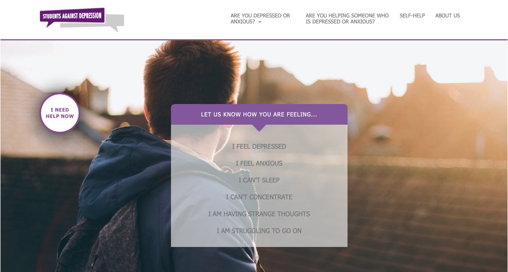
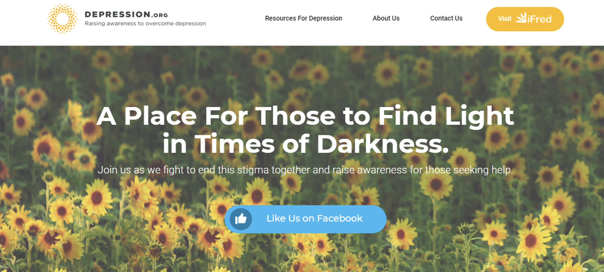

Web Service for Mental Health Platform
OVERVIEW
Empowering mental health support for individuals and their loved ones.
More people are struggling with mental health problems nowadays. TalkaboutDepression.org aims to create a solution to help those who are going through mental illness. Our team assists TalkaboutDepression.org in building the design, which is used to aid individuals dealing with depression, as well as their friends or family who are suffering from depression issues or even considering suicide. The website allows people to self-diagnose the severity of their condition and provides appropriate solutions based on their situation. Additionally, it offers information on actionable steps and professional advice.
RESEARCH & DISCOVERY
Target User Interview
Our target audience was individuals between 17-26 years old who either experienced depression or were friends of individuals struggling with depression. We conducted interviews with 7 participants.
How do they know?
Our target audience found that either they or their friends had changed their behavior and were experiencing symptoms such as poor concentration, tiredness, or disturb sleep.
What will they do?
Our audiences would keep them accompanied and support them. They would also help them find relevant resources through Google for mental health advice or counseling websites. If they are stuck in depression for a long time or engaging in self-harm behavior, they will encourage them to reach out for professional help, such as counseling services provided by schools or workplaces.
What would you expect on this website?
They expect the website to provide an online diagnosis for depression so they can determine the severity of their own or their friends' depression. Additionally, they would like to receive different pieces of advice or information depending on the severity. They also expect the website to offer live chat functions with mental health professionals for emergency situations.
Persona


Competitor Analysis
We assessed three competitor websites to see how they provide support and services for individuals with depression or friends of those experiencing depression. Our focus was on understanding the functionality of the websites, evaluating their pros and cons, and examining their website traffic.
Competitor - Better Help

Better Help is an online portal that provides direct-to-consumer access to behavioral health services. Online counseling and therapy services are provided through web-based interaction as well as phone and text communication. emergency situation.
How does it work?
Start with choosing the type of mental problem and answering related questions you are facing. Then register for the plan of the service. After that, they will provide a professional counselor for you. You can have counseling through text, phone or video.
Pros and Cons
Pros
- Provide specific counseling for different mental illnesses.
- Have qualified licensed professional counselors.
Cons
- It does not provide immediate help or feedback.
- Have to make the registration before getting started with the service..
Website Traffic
- Total Visit: 3.372M
- Average Visit Duration: 02:52 min
Competitor - Students Against Depression
Students Against Depression is a website offering information and advice to people who are suffering from depression. They epically focus on students who have depression.
How does it work?
Selecting your symptom or your situation. They will provide related suggestions for the situation such as what you can do. Also, offering some knowledge about understanding depression and how to against it.
Pros and Cons
Pros
- Provide specific counseling for different mental illnesses.
- Have qualified licensed professional counselors.
Cons
- Just provide general information for depressed people
- People cannot contact any counselor to help them through the website.
Website Traffic
- Total Visit: 47,177
- Average Visit Duration: 01:57 min
Competitor - Depression.org
Depression.org informs readers about the nature of depression, its treatment possibilities, and important factors to consider. The site also encourages people to seek therapy and treatment if they are in need.
How does it work?
People can search the knowledge about depression on the site. Also, get information about how to treat depression and related articles about depression.
Pros and Cons
Pros
- Offers especially resources highly focused on specific instances of depression.
Cons
- No access to direct communication with a counselor.
- More focus on letting people learn about depression.
Website Traffic
- Total Visit: 5136
- Average Visit Duration: 01:01 min
DESIGN & VALIDATE
Depending on the interview and the competitor analysis research result, we would like to focus the design on three main functions.
- Different pathway for our target audiences: Depression person & Friends of depression
- Self Diagnose the severity of depression
- Provide appropriate solutions and immediate support
Sperate the pathway to For Myself and For My Friend. Answer a few questions for the situation then the site will offer some related information.

Self-diagnoses of depression quiz refer by PROMIS Emotional Distress Depression Short Form
The information about the place will provide support